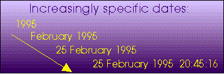
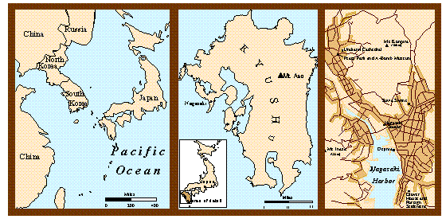

ELEMENTS THAT ARE FOUND ON VIRTUALLY ALL MAPS:
Distance
or scale
Distance or scale must always be indicated or implied, unless
the audience is so familiar with the map area or distance of such little
relative importance that it can be assumed by the audience.
Distance and scale can be indicated in a variety of ways on a
map in verbal, numeric, or graphic form.
In using computer systems, the graphic form of representing scale is
often preferred. With computers, maps are often drafted at different scales
than they are printed. In using verbal or numeric scales, the cartographer
must be certain that the map is printed at precisely the scale indicated.
If a graphic scale is inserted in a digital map, it will always maintain
its relative size with respect to the digital map no matter how it is printed.
Remember, scale varies significantly across the area of some maps.
If this is true of yours, be sure to note the adjustments required.
 Direction
Direction
The question of what is north can be an issue on some
maps. On the earth, true north (the direction to the North Pole)
differs from magnetic north, and the magnetic north pole moves due
to changing geophysical conditions of the earth's crust and core. Many
reference maps indicate both. Most maps we compose are oriented to true
north, even though compass readings in the field are angled to the magnetic
pole. Adjustments for these compass deviations are made routinely.
Legend
The legend lists the symbols used on a map and what they depict.
These symbols should appear in the legend exactly as they are found in
the body of the map and be described clearly and fully. Do not treat the
legend as an afterthought; it should receive careful attention. Be aware,
however, that not all maps require legends. Sometimes the necessary information
is put in a caption, or subsumed by textual annotations placed directly
on the body of the map.
Sources of information and how processed
Unless it is absolutely clear from the context in which a map
appears, readers will need to know about the sources from which the map
was derived. You must identify your sources so that the reader could, if
needed, track them down to check your information and interpretation. Often
the age, accuracy, and reliability of sources is critical to the interpretation
of a map and should be noted. Sometimes it is also important to indicate
how the data was processed, grouped, generalized, or categorized.
ESSENTIAL ELEMENTS THAT ARE SENSITIVE TO CONTEXT:
Title
The title of a map is usually one of it's most essential features.
As such, it should receive very careful attention so as to match the needs
of the theme and audience. A short title might suffice if readers can be
assumed to be familiar with the theme being presented, more information
is needed for less experienced readers. The content of the title should
also be measured against other lettering applied to the map, for example
in the legend or annotations. Sometimes, legends and annotations supplant
much of the content of a title. Also, be aware that captions usually take
the place of titles for maps appearing in publications such as books and
journals.
Projection
The projection used to create a map influences the representation
of area, distance, direction, and shape. It should be noted when these
characteristics are of prime importance to the interpretation of the map.
Some widely used locational reference systems such as the U.S. State Plane
Coordinate system and Universal Transverse Mercator system are based on
predefined projective geometries that are implicit in the use of the coordinate
systems themselves.
Cartographer
The authority lying behind the composition of a map can be of
prime importance in some situations. Most maps note the name, initials,
or corporate identity of the cartographer(s).
Date of production
The meaning and value of some maps--such as those relating to
current affairs or weather--are time sensitive. The reader must know when
they were produced to gauge whether to trust them. An out-of- date road
atlas or city map can cause tremendous frustration. Other maps are less
sensitive to the passage of time, but the date of production can still
be important if, for example, better information becomes available in the
period after publication. Be sure to indicate the date of production for
your map, or make sure that it can be inferred from the context in which
it is to appear (maps that appear in newspapers, magazines, and journals
can be dated in this way). The detail with which you specify the date of
production will depend again on the nature of your theme and audience.

ELEMENTS THAT ARE USED SELECTIVELY TO ASSIST
EFFECTIVE COMMUNICATION:
The maps of Japan shown below are part of a series of maps designed for
inclusion in a book. Therefore, they are not titled -- that function will
be served by captions. The maps are designed to show the location of Japan,
Kyushu, and Nagasaki. Because no thematic information is included, a legend
is not necessary.
The maps move from a rather large scale down to a very precise representation
of Nagasaki. Because the three maps are shown together, it is not necessary
to include a locator map in the map of Nagasaki. If, however, a map of
Nagasaki is intended to stand alone, a locator map is absolutely necessary.
Click on any of the frames to see alternate layouts for these maps.
(inactive 5/17)

Back
to Basic Elements of Map Composition | Back
to Table of Contents
revised 2005.8.29. KEF
 Direction
Direction
 Legend
Legend